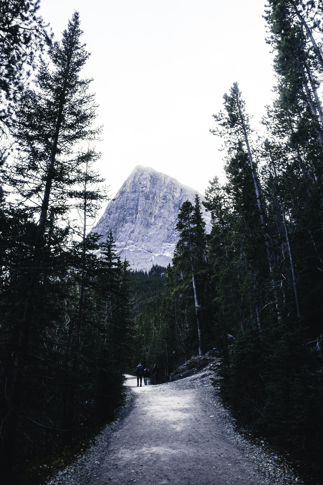

A little less hurry
Some days deserve a little more space. Ridgeway imagines small-group walks with time for the trees, the view, and the conversation along the way.
Choose an imagined walk, set your group and pace, and keep a sample plan. You can try the whole flow here.
- Your group
- 1–8 walkers
- Time outside
- 90–230 minutes
- Your pace
- Steady or lingering
Three walks to imagine
Each starts and ends in the same place. Choose by the time you want to make for it.
Pinefold Loop
A forest loop with a little time beside the water.
High Meadow Way
Open ground, an imagined meadow, and a long pause to look around.
Granite Passage
A longer day between the trees and an imagined ridge.
These are invented walks and planning values. The photograph illustrates the mood of a day outside; it does not show one of these routes.
Give the day its shape
- 01
Find your walk
A short loop, a little open ground, or a longer passage. Start with the time you have.
- 02
Make it your pace
Set your group size. Choose Steady, or allow another 20 minutes for a Lingering day.
- 03
Keep a plan
Prepare the details, then save them in this browser or download a text copy to keep.